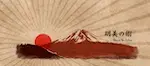
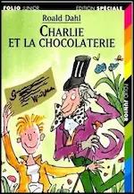
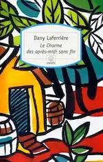
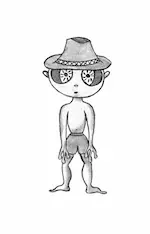

2017
Juillet
- 23 — Les onsen 温泉
-
23 —
Les hiragana
-
22 —
Les hiragana
-
16 —
Les hiragana
-
15 —
Les hiragana
-
15 —
Les hiragana
-
14 —
Les hiragana
- 11 — Les hiragana
- 09 — Introduction à l’écriture japonaise
- 08 —  À propos d’Akemi no jutsu !
2016
Novembre
- 12 — Énième nouveau début pour mon roman Samare
- 07 — Harry Potter et l'enfant maudit de Jack Thorne
- 04 — Dernières réflexions sur Samare : la cité et son fonctionnement
- 01 — Retour dans le monde sinueux de l’écriture
Mai
Avril
- 25 — Réflexions sur Samare 5/5
- 21 — Réflexions sur Samare 4/5 - Les personnages secondaires (suite)
- 17 — Réflexions sur Samare 3/5 - Les personnages secondaires
- 17 — Interrogations en vrac sur Samare
- 11 — Réflexions sur Samare 2/5 - Les personnages principaux
- 10 — Réflexions sur Samare 1/5
- 09 — Flocons d’amour de Maureen Johnson, John Green et Lauren Myracle
- 02 — Vous revoir de Marc Levy
Mars
- 25 — Et si c’était vrai… de Marc Levy
-
20 —
Mes dernières lectures
Charlie et la chocolaterie (Roald Dahl), Le charme des après-midi sans fin (Dany Laferrière), Narnia - Le neveu du magicien (C.S. Lewis), Chroniques des années noires (Kim Stanley Robinson), ♡ Le ver à soie (Robert Galbraith), ♡ Le visiteur du futur - La Meute (Slimane-Baptiste Berhoun et François Descraques)
- 13 —  La réécriture de mon roman ou comment passer son temps à réinventer sa propre histoire ?